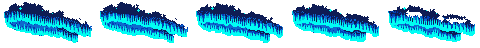
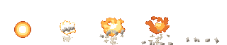
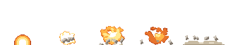

아트 루프 결과 — pilot2
스펙 docs/specs/art-loop.md · 승인: 2026-10-21 사용자 — e30·k37 다시, 유료 0(PixelLab 잔량 49 < 바닥 300, 무료 workbench 만), 정체=다시 뽑기 규칙 · 유료 0/0회 · 비평 5회 · 합격선 A(전 항목 3+ · 평균 3.5+) · ★ = 결과로 고른 판
게임 모습은 게임 로더를 그대로 거친 그림이다(직업색 시트는 대표색으로 칠함). 게임 적용은 사용자 확인 뒤에 한다 — 일감마다 "적용 / 원래대로 + 이유"를 알려 주면 된다.
e30 E30 별빛 화살비 ★★★: 하늘에 걸린 세로 오로라 커튼(위에서 아래로 드리운 세로 주름 띠, 아랫단이 밝고 위로 갈수록 옅어짐) + 별이 반짝이는 밤하늘 조각. 프레임이 돌며 커튼이 옆으로 일렁이는 루프. 원래 색 시트. 쓰는 곳: skills.js
고친 이유: pilot1 에서 정체 — 원본은 색 888개·위쪽 회색 얼룩·끝 프레임 튐(2.86), 수리판 3.29. workbench 로 다시 그린 판은 '바닥에 깔린 톱니 능선'으로 읽혀 의도 2 → 커튼이 하늘에 걸려 아래로 드리운 모양이어야 한다(바닥 능선·풀숲 금지) · 유료 0/0 · 비평 2회 · 수리 1 · 다시 뽑기 0
결과: 합격 → v1 (평균 3.57)
전 (v0, 게임 모습)

후 (v1, 게임 모습)

| 판 | 만든 방법 | 의도 | 읽힘 | 깔끔 | 명암 | 도트 | 움직임 | 규칙 | 평균 | 판정 | 비평 요약 |
|---|---|---|---|---|---|---|---|---|---|---|---|
| v0 | 원래 그림 | 3 | 3 | 2 | 3 | 3 | 3 | 3 | 2.86 | fix | 청록 띠는 게임 배율에서 보이지만, 윗단의 회색 잡색·부스러기가 지저분하고 구도가 기운 가로 띠라 오로라 커튼으로 약하게 읽힌다. 팔레트 줄이기와 부스러기 정리, 5프레임 교체로 고친다. 시트 |
| v1 ★ | 수리 v0: recolor_gray, quantize, drop_crumbs, deink, drop_crumbs, fill_holes, workbench | 3 | 4 | 3 | 4 | 4 | 3 | 4 | 3.57 | pass | 아랫단이 밝고 위로 갈수록 어두워지는 세로 주름 오로라로 읽혀 넣을 만하다. 다만 커튼이 가로로 누워 있고 별이 적으며 일렁임이 약하다. 시트 |
k37 대공성포(궁극기) 포격 마지막 타격 — 바닥 기준 대폭발: 바닥에서 솟는 주황·흰 폭발 + 밝은 회색 돌덩이 몇 개 + 마지막에 낮게 퍼지는 먼지. 원래 색 시트. 쓰는 곳: siegeBarrage.js
고친 이유: pilot1 에서 정체(3.29→3.43) — 아래 파편이 잡부스러기, '털뭉치 생물 같은 실루엣', 먼지 단계 없음. 연산으로 못 고친 것은 workbench 그리기 또는 다시 뽑기로 · 유료 0/0 · 비평 3회 · 수리 2 · 다시 뽑기 0
결과: 합격 → v2 (평균 3.57)
전 (v0, 게임 모습)

후 (v2, 게임 모습)

| 판 | 만든 방법 | 의도 | 읽힘 | 깔끔 | 명암 | 도트 | 움직임 | 규칙 | 평균 | 판정 | 비평 요약 |
|---|---|---|---|---|---|---|---|---|---|---|---|
| v0 | 원래 그림 | 3 | 4 | 3 | 4 | 3 | 3 | 4 | 3.43 | fix | 기사 옆에서 대폭발로 잘 읽히고 외곽선 문제도 없지만, 시작 구슬이 공중에 떠 있고 끝의 낮은 먼지가 빠져 있다. 끝이 돌만 남고 끊기므로 앵커를 내리고 먼지 프레임을 보충하는 수리가 필요하다. 시트 |
| v1 | 수리 v0: anchor, anchor, drop_crumbs, anchor, workbench | 3 | 3 | 3 | 4 | 3 | 3 | 4 | 3.29 | fix | 바닥 반구에서 시작해 낮은 먼지로 끝나는 큰 흐름은 맞다. 다만 2~4프레임 폭발이 바닥에서 떠 있고, 아래 줄무늬 기둥 조각이 지저분하다. 4프레임은 모양이 튄다. 기둥 정리와 위치·밝기 보정으로 고칠 수 있다(fix). 시트 |
| v2 ★ | 수리 v0: anchor, anchor, anchor, anchor, drop_crumbs, anchor, workbench | 4 | 4 | 3 | 4 | 3 | 3 | 4 | 3.57 | pass | 바닥에서 솟는 주황·흰 폭발 → 돌 → 낮은 먼지 흐름이 게임 배율에서 잘 읽혀 통과. 다만 4프레임 단색 주황 덩어리와 3프레임 구멍, 뭉친 돌은 다듬을 여지가 있다 시트 |